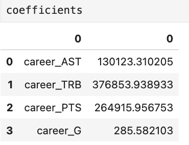
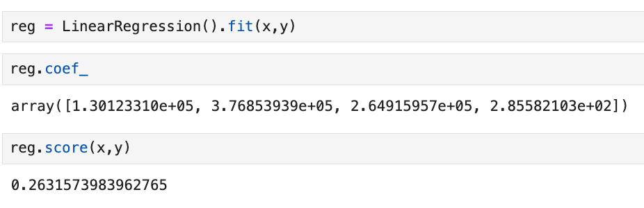

Project: NBA Salary Prediction
Introduce the Problem
For this project, I am going to be using linear regression to predict an NBA player's salary using features such as points, assists, rebounds, and games played. This model will also help understand what are valuable features of a player.
Introduce the Data
For the data used to create the model, I am using a database from Kaggle titled “NBA Players Performance and Salaries” found here: NBA Players Performance and Salaries.
Pre-processing
The data was split into two datasets, one called 'players' with all the player stats and one called 'salaries' with all the player salaries. I merged the two datasets on their 'player_id' to create one dataset.
Next, I dropped all the columns with null features because they were not needed for this dataset. Then, I split the data between X (the features used for prediction) and y (the target, which is the salary).

Data Understanding/Visualization
A visualization of the coefficients of the model:
Modeling
Using the LinearRegression model to predict player salaries based on player statistics.
Evaluation
From the model, we achieved a score of 0.26. The most important feature contributing to this score was 'rebounds,' indicating that rebounds are a desirable trait in determining player salary.
Storytelling and Impact
This project demonstrates that certain player stats, such as rebounds, have a significant impact on salary. By identifying these key features, teams and analysts can better assess player value and salary potential.
Code
The code used for this project can be found here.
References
- Kaggle Dataset: NBA Players Performance and Salaries
- Class Material
- Stack Overflow
- Sklearn Documentation